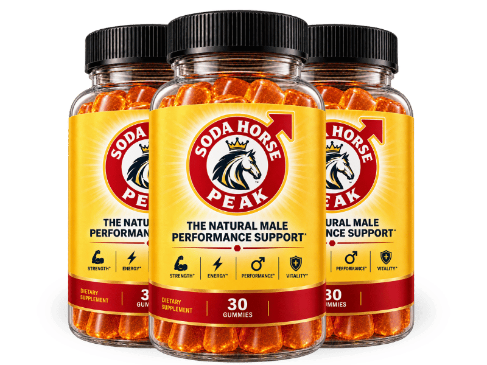

What Is SodaHorsePeak And How Does It Work?
Something stops working in men after 45, and it is not what most guys think.
The real issue has a name in vascular research: the flow bottleneck. The inner lining of every blood vessel produces a molecule called nitric oxide. Nitric oxide is the signal that tells those vessels to relax and widen, allowing blood to rush in exactly where and when it needs to. After 45, production of that molecule drops off a cliff. The vessels stay tight. Flow slows to a trickle right when it matters most.
Picture a garden hose with a kink. The water pressure at the faucet is fine — the problem is the kink halfway down the line. The flow bottleneck is that kink. No amount of willpower, no change in desire, and no amount of trying harder will push blood through a constricted vessel. The signal to open has to come first.
SodaHorsePeak is a daily honey gummy built to restart that signal. L-Citrulline and L-Carnitine target nitric oxide production directly, while a 200mg proprietary blend of Panax Ginseng (20:1 extract), Maca Root (20:1), and Rhodiola (20:1) rebuilds the hormonal drive that triggers the signal in the first place. One gummy a day. No prescriptions, no clinical appointments, no awkward pharmacy conversations.
This is not a one-night fix. The adaptogens in the formula build up over weeks. Most men notice a shift in energy and drive within the first few weeks, with stronger, more reliable performance developing between weeks four and eight. The recommended course is 90 to 180 days of consistent daily use.
SodaHorsePeak Ingredients
Every ingredient in the formula targets a specific piece of the flow bottleneck — from the vessel wall that needs to relax, to the hormonal system that initiates the signal.
- L-Citrulline (35mg): Converts to L-Arginine inside the body, directly boosting nitric oxide production. The vessel-relaxing compound that starts the entire chain of events.
- L-Carnitine (25mg): Fuels cellular energy production and supports nitric oxide signaling in vascular tissue — the part that keeps vessels responsive instead of sluggish.
- Panax Ginseng Extract (20:1): Known across centuries as "man's root." Supports nitric oxide output, lowers performance-related stress, and restores the natural drive that declines with age.
- Maca Root Extract (20:1): Traditional Peruvian botanical used for generations to support libido, physical energy, and stamina in men. The foundation of the hormonal side of the formula.
- Rhodiola Extract (20:1): An adaptogen that fights fatigue at the source. Helps the body handle stress without crashing, keeping energy steady throughout the day and night.
- Zinc as Zinc Citrate (1.5mg — 14% DV): A mineral directly tied to testosterone production. Low zinc is one of the most common and overlooked reasons men lose drive after 50.
- Grape Seed Extract (25mg, 20:1): Rich in proanthocyanidins that protect blood vessel walls and keep circulation efficient — the structural maintenance the vascular system needs.
- Vitamin B6 — Pyridoxine (2mg — 118% DV): Plays a central role in hormone regulation and nervous system function, including the body's natural production of testosterone.
- Vitamin B3 — Niacin (25mg — 156% DV): One of the most studied vitamins for vascular health. Promotes healthy blood vessel dilation — widening the path that nitric oxide opens.
The blend is deliberate. Amino acids handle the immediate vascular work. Adaptogens restore the hormonal foundation. Vitamins and minerals fill the nutritional gaps that let the flow bottleneck form in the first place.
SodaHorsePeak Side Effects
The formula is built from nutrients, amino acids, and botanical extracts the body already recognizes — not synthetic compounds that force a system into overdrive.
SodaHorsePeak is manufactured in Aurora, Colorado, in a GMP-certified facility. Every batch follows strict quality standards for purity and consistency. The gummy format means no large capsules and no chalky aftertaste — just a daily honey gummy that fits into any routine without a second thought.
With a growing base of over 25,000 men using the formula, there are no widespread reports of adverse reactions when taken as directed. The ingredients are dosed at supportive levels, not pharmacological ones, which is a meaningful distinction for men who want results without the trade-offs that come with prescription alternatives.
As with any supplement, anyone currently managing a health condition or taking prescription medication should check with their healthcare provider before starting.
SodaHorsePeak Dosage
One gummy a day. That is the entire protocol.
Each jar of SodaHorsePeak contains a 30-day supply. Take one gummy at whatever time works for your routine — morning, afternoon, or evening. The formula absorbs well regardless of timing, and the adaptogens build in the system over days and weeks rather than spiking and crashing within hours.
Consistency matters more than timing. Skipping days resets the buildup and delays results. Men who stick with the full course — 90 to 180 days without interruption — report the strongest and most lasting improvements.
The product ships in multi-jar options for exactly this reason. Longer supply kits lock in a lower per-jar cost and remove the gap between shipments that breaks the streak.
SodaHorsePeak – Refund Policy
Every order of SodaHorsePeak is backed by a 60-day, no-questions-asked money-back guarantee.
That is 60 days to try the formula, follow the daily protocol, and decide whether the results speak for themselves. The guarantee exists because the team behind the product trusts what the formula does when a man actually uses it consistently — and they are willing to put their revenue on the line to prove it.
For complete terms and to verify the current guarantee, visit the official SodaHorsePeak website directly.
SodaHorsePeak Customer Reviews
 Robert Harmon
Phoenix, AZ
Verified Purchase – 6 Bottles
Robert Harmon
Phoenix, AZ
Verified Purchase – 6 Bottles
"Two years. That is how long I had been dreading bedtime instead of looking forward to it. My wife stopped bringing it up, and somehow that was worse than the arguments. I did not want to go the prescription route — I watched my brother deal with the headaches and the scheduling and the whole clinical production of it. A friend told me about SodaHorsePeak and I figured one gummy a day was the lowest-effort thing I could try. Somewhere around week five, something just clicked. The drive was there. The confidence was there. My wife told me it felt like our first vacation together again. That was the night I knew this was real."
 David Moretti
Chicago, IL
Verified Purchase – 3 Bottles
David Moretti
Chicago, IL
Verified Purchase – 3 Bottles
"The anxiety was the part nobody warns you about. It was not just the physical side — it was knowing it might happen again, every single time. I started turning down date nights. Made excuses to skip weekend trips. Anything that might lead somewhere I could not deliver. A month into SodaHorsePeak, the dread started lifting. I stopped bracing for failure. By the end of the second jar I was initiating again — something I had not done in over a year. I am already on my second order because there is no version of my life where I go back to the way things were before."
 Dorothy Sullivan
Denver, CO
Verified Purchase – 3 Bottles
Dorothy Sullivan
Denver, CO
Verified Purchase – 3 Bottles
"I am the one who actually ordered it, not my husband. He would never have gone looking for something like this on his own — too proud, too used to just not talking about it. I read about the honey gummy format and thought at least he would actually take it instead of leaving a bottle of pills untouched in the cabinet. I did not say much when the jar arrived, just left it on the counter. About a month later he mentioned, almost embarrassed, that he felt more like himself again. We have been married thirty-one years and I was not expecting to feel this kind of relief over a jar of gummies, but here we are."
SodaHorsePeak – Where To Buy
SodaHorsePeak is available exclusively through its official website. It is not sold in retail stores, and it is not listed on Amazon, eBay, Walmart, or any third-party marketplace.
That distinction matters. Products sold through unofficial channels have no guarantee of authenticity. There is no way to verify storage conditions, expiration dates, or whether the seal has been tampered with. And the 60-day money-back guarantee only applies to orders placed directly through the official site — a purchase from a third-party seller carries none of that protection.
The official channel is also the only place to access multi-jar pricing and free shipping offers. There are no coupon codes floating around legitimate discount sites; the pricing on the official page is the actual pricing.
To ensure you're getting the authentic product, most users choose to visit the official website directly.
Is SodaHorsePeak A Scam?
Nothing about the formula, the manufacturing, or the guarantee points in that direction.
The ingredients — L-Citrulline, Panax Ginseng, Maca Root, Rhodiola, Niacin, Zinc — are documented, dosed at real amounts, and manufactured in a GMP-certified facility in Colorado. The guarantee gives a full 60 days to evaluate results. The reviews from men who have used it consistently tell a story that lines up with what the formula is built to do: clear the flow bottleneck and let the body do what it already knows how to do when the signal is working again.
No supplement replaces medical treatment for a diagnosed condition, and results vary from one person to the next. If you have been dealing with this for years and nothing has moved the needle, that skepticism is earned. But a formula backed by a full refund window is not asking you to believe anything — it is asking you to try it and see.
Try it for 60 days. If nothing changes, you send it back and you are out nothing but a few minutes of your time.
As with any supplement, consult a healthcare professional if you have an existing condition or take prescription medication.

For those who want to verify product details or check current availability, the official SodaHorsePeak website remains the safest and most reliable option.